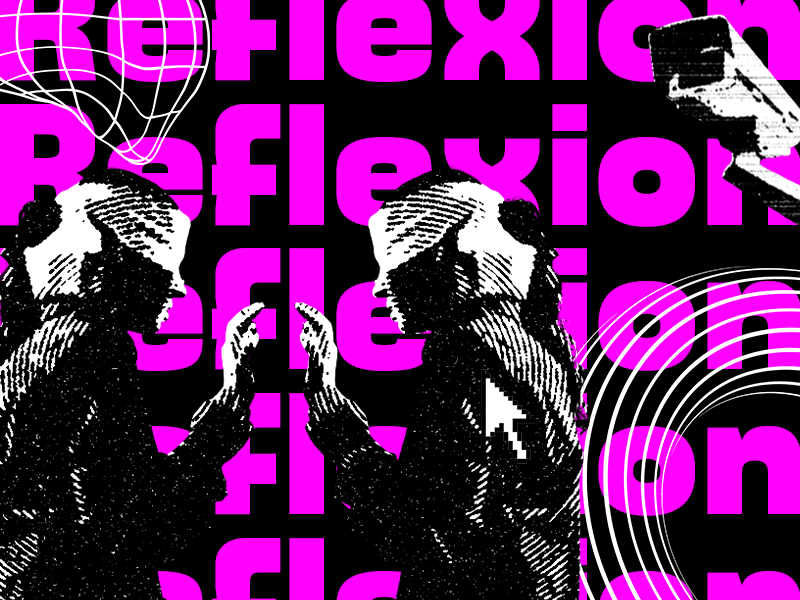
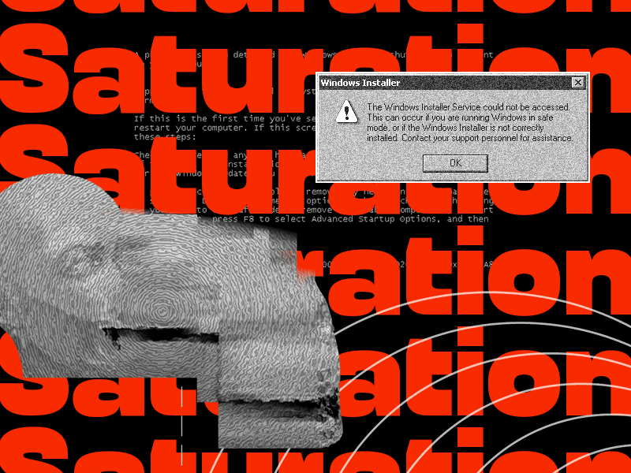

Le laboratoire
Toutes nos solutions pour assurer votre tranquillité face à Big Brother.
La computer vision est partout. Dans votre maison, sur votre lieu de travail, dans l’espace public, vous êtes constamment sous surveillance. Votre visage est filmé, analysé, catégorisé par des acteurs publics et privés. Reprenez possession de votre visage et ne laissez plus les algorithmes exploiter votre identité. Pour cela, Hidentity vous propose toute une gamme de services pour échapper à la reconnaissance faciale. « Utilisez les outils de surveillance contre eux-mêmes » : telle est la philosophie de notre laboratoire.
UNDERCOVER
Grâce à UNDERCOVER, dissimulez votre identité mais conservez votre personnalité. Grâce à deux modules placés sur vos tempes, projetez un masque holographique devant votre visage pour contrer les systèmes de surveillance vidéo. Les e-masks sont totalement personnalisables et n’ont pour limite que votre imagination.
REFLECTOR
Avec REFLECTOR, votre environnement est votre meilleur allié. En positionnant des miroirs sur les points nodaux de votre visage, REFLECTOR empêche les algorithmes de vous calculer et de vous reconnaître. Les caméras verront la scène dans le reflet de votre bijou de visage, jamais votre identité ne sera révélée.
EVERYWARE
Avec EVERYWARE, offrez-vous le don d’ubiquité. Déstabilisez les systèmes de surveillance internationaux grâce à vos multiples visages et traces numériques. Pour les algorithmes, vous serez à la fois à Paris, à Marseille et à Bordeaux, dans un café et dans un parc, à la même heure, au même moment.
Crédits
Ce projet a été réalisé en 4 jours par les étudiants de Master 1 Design : Innovation Interaction Services du 12 au 16 avril 2021. Il relève d'un exercice de design fiction questionnant la computer vision (surveillance vidéo et algorithmique) et imaginant de potentielles contre-mesures.
- Accompagnement : Florian Harmand
- Technique : Julien Gachadoat.
- Design graphique : Mathias Faro, Léa Cluzel.
- Typographie : Millimètre par Jérémy Landes, Karrik par Jean-Baptiste Morizot & Lucas Le Bihan.
Références
Ce projet repose sur une documentation concernant les enjeux de vidéosurveillance et de traitement algorithmique en voie de généralisation. En voici quelques références :
- Les projets d'Adam Harvey.
- La veille et les actions de la Quadrature du Net et Technopolice.
- Les ouvrages À la trace et État d'urgence technologique d'Olivier Tesquet.